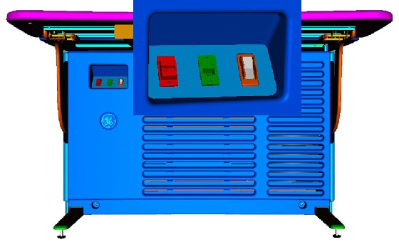
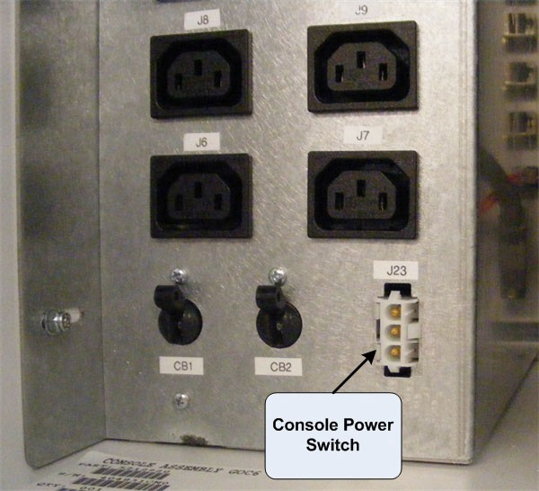
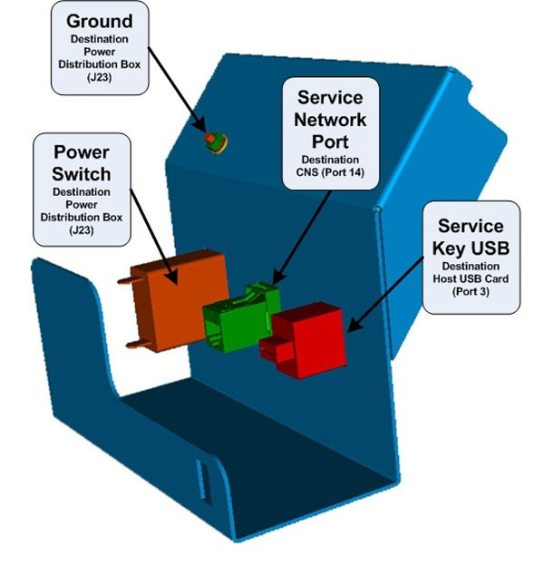
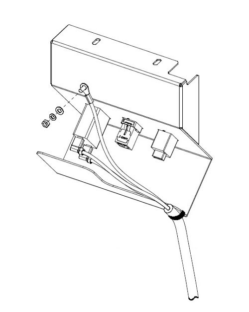

Operating Documentation
Direction 5307452-8EN, Rev# 4
Discovery CT750 HD Service Methods - Adv
Operating Documentation |
| Required Persons | Preliminary Reqs | Procedure | Finalization |
|---|---|---|---|
| 1 |
This procedure describes and illustrates the steps necessary to replace a Console Power Switch or Power Switch Cable in the upper left compartment of the Operator Console.
This procedure requires disassembly of part of the console chassis. Allow ample time and work space to perform this procedure.
| Last Revised: | 15 July 2008 |
| Item | Qty | Effectivity | Part# | Manufacturer | |
|---|---|---|---|---|---|
| Standard FE Toolkit | 1 | - | - | - | |
| Adjustable Wrench | 1 | - | - | - | |
| 3 mm Hex Key Wrench | 1 | - | - | - | |
| Item | Qty | Effectivity | Part# | Manufacturer |
|---|---|---|---|---|
| Ty-Raps® | As required | - | - | - |
| Item | Qty | Effectivity | Part# | Manufacturer | |
|---|---|---|---|---|---|
| Console Power Switch | 1 | - | 5316032 | - | |
| Power Switch Cable | 1 | - | 5307279 | - | |
| ELECTROCUTION HAZARD | |
| HIGH VOLTAGE PRESENT | |
| USE PROPER LOCKOUT / TAGOUT PROCEDURES BEFORE REPLACING THE COMPONENTS. |
| FOLLOW ALL REQUIRED SAFETY AND PPE PROCEDURES CUSTOMARY FOR YOUR ORGANIZATION WHEN WORKING ON THIS PRODUCT. | |
| Condition | Reference | Eff |
|---|---|---|
Access to the front of the Operator Console is required. | - | - |
Only trained service personnel should service the GE CT Scanner. | - | - |
Select one of the following methods to power off the Operator Console:
If applications are running, click the Shut Down icon and select Shut Down.
If applications are down, open a Unix Shell using the Toolchest.
Type: {ctuser@hostname} halt<Enter>.
The Operator Console monitor will display a ‘System Halted’ message when it is acceptable to power off the Operator Console.
Power OFF the Operator Console at the front panel switch. (See Illustration 1.)
Illustration 1: Console Power Switch

Perform prescribed Lockout/Tagout procedure. For added protection, disconnect the Twist-N-Lock Main Power Cable from the rear of the console.
Remove the front and rear Operator Console Covers per prescribed cover removal procedure.
Disconnect Console Power Switch cable from the Power Distribution Box, Connector J23.
Illustration 2: Console Power Switch Cable Connection at Power Distribution Box

Disconnect the Ethernet Port and USB cables from the rear of the Console Power Switch Panel Assembly ( Illustration 3).
Illustration 3: Console Power Switch Panel Assembly Connections

Loosen and remove the two (2) 4mm socket cap mounting screws holding the console Power Switch Assembly to the console chassis and remove the entire Console Power Switch Assembly with its wiring harness from console.
Illustration 4: Console Power Switch Panel Assembly Removal

With the Power Switch Panel Assembly removed from the console chassis, either the Power Switch or the Power Switch Cable can be easily access and replaced.
1. Disconnect the two (2) Fast ON Connectors on the rear of the Power Switch.
Illustration 5: Console Power Switch Cable Connections

Remove Failed Power Switch by compressing the spring clips on the backside and pressing the Switch out the front of the Power Switch Panel.
Install the replacement Power Switch by pressing the switch into the Power Switch Panel from the front.
Reconnect the two (2) Fast On Connectors removed earlier.
Disconnect the two (2) Fast ON Connectors on the rear of the Power Switch.
Disconnect the Power Switch Panel Ground wire by loosing the Hex Nut and removing the Ground Wire ring lug from the ground stud. (See Illustration 5.)
Cut any Ty-Raps® holding the cable to the Power Switch Panel Assembly.
Install the replacement Power Switch Cable by reconnecting the two (2) Fast On Connectors to the Power Switch. Refasten the Ground Wire to the Ground Stud on the Power Switch Panel Assembly using the hex nut removed earlier. Torque to 1.3 N-m.
Replace any Ty-Raps® removed earlier.
Place and hold the repaired Console Power Switch Panel Assembly in upper left compartment of console.
Install the Power Switch Panel Assembly using the two (2) 4mm socket cap mounting screws removed earlier. Torque to 2.9 N-m.
Replace the Ethernet and USB cables back in the rear of the Console Power Switch Panel Assembly.
Reconnect Console Power Switch Cable to the Power Distribution Box, Connector J23.
Check that the two (2) Circuit Breakers (CB1 & 2) on the Power Distribution Box are set ON.
Reconnect the Twist-N-Lock Main Power Cable from rear of console and remove Lockout Tagout protection applied earlier.
Power ON the Operator Console at the console’s front panel switch.
Verify that power is restored to all the console components:
Internal Computer modules (i.e. Host, DIG, HSDA ... etc.)
External Peripherals (i.e. Monitors, Peripheral Tower ... etc)
See Power Distribution Box Troubleshooting if any problems are suspected.
Remove console power.
Install console Front Cover.
Restore console power.